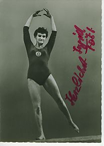

Ingrid Fost (GDR)
1961 European AA Bronze Medalist

Medal Total
European Championships: 1 Silver, 5 Bronze
Ingrid Fost (nee Michaelis) was born in Babelsberg on November 9, 1934, and began gymnastics at age 14 at BSG Rotation Babelsberg. Her first coach was Heinrich Latzke. After a while, she transferred to SC Einheit Berlin where she got to train with her idol: Vera Matschulat-Ewald. In 1956 she married sports trainer Helfried Fost and became pregnant, which prevented her from participating in the 1956 Melbourne Olympics. At the 1960 Olympics, she was the highest-ranked German gymnast, and at the 1964 Olympics she helped her team to a fourth-place finish.
Competition Results
1955
GDR Championships: 1st AA, 1st V, 1st FX, 2nd UB, 2nd B
Warsaw International: 11th AA, 2nd UB
1957
Berliner Kunstturnen: 1st AA
GDR Championships: 9th AA, 2nd V, 2nd FX
1958
Berliner Kunstturnen: 1st AA
Azerbaijan SSR-GDR Dual Meet: 1st Team, 1st AA
Dynamo Berlin-Dynamo Bucharest Dual Meet: 2nd Team
GDR Championships: 1st AA, 1st V, 1st UB, 1st B, 3rd FX
GDR-HUN-YUG Meet: 1st Team, 1st AA
Moscow Summer Sports Games: 3rd Team, 20th AA
World Championships: 9th Team, 43rd AA
1959
Berliner Kunstturnen: 1st AA
Bucharest International: 5th AA, 2nd FX, 4th UB, 5th B
CSSR-GDR Dual Meet: 2nd Team, 1st AA
Dynamo Championships: 1st AA
European Championships: 6th AA, 3rd V, 3rd UB
GDR-Azerbaijan SSR Dual Meet: 1st Team, 1st AA
GDR Championships: 7th AA, 1st V, 1st UB, 1st B, 1st FX
GDR-ROM Dual Meet: 1st Team, 1st AA
GDR-ROM-FRA Dual Meet: 1st Team, 1st AA
GDR-USSR Dual Meet: 2nd Team, 4th AA
Leipzig International: 1st AA
1960
CSSR Spartakiade: 4th AA, 2nd FX
Dynamo Spartakiade: 1st AA
GDR Championships: 1st AA, 1st V, 1st UB, 1st B, 3rd FX
GDR-CSSR Dual Meet: 2nd Team, 1st AA,1st B, 2nd V, 2nd UB, 2nd FX
HUN-GDR Dual Meet: 2nd Team, 1st AA
Olympic Games: 6th Team, 9th AA
Romanian International: 1st AA
ROM-GDR-POL Meet: 2nd Team, 2nd AA
Warsaw International: 1st AA
1961
Dynamo Spartakiade: 2nd Team, 3rd AA
European Championships: 3rd AA, 2nd V, 3rd UB, 3rd
B, 5th FX
GDR Championships: 6th AA
1962
Berliner Kunstturnen: 2nd AA
CSSR-GDR-UKR Meet: 2nd Team, 2nd AA
Dynamo Championships: 1st AA
GDR Championships: 1st AA, 1st UB, 1st B, 1st FX, 2nd V
Roedel Memorial Tournament: 1st AA
SWE-GDR Dual Meet: 1st Team, 2nd AA
Tblisi International: 5th AA
Warsaw International: 3rd AA
World Championships: 5th Team, 7th AA, 5th V
1963
Berlin District Championships: 3rd AA
Dynamo Spartakiade: 1st Team, 1st AA, 1st V, 1st UB, 1st B, 2nd FX
FDGB Cup: 1st Team, 1st AA
GDR-BUL Dual Meet: 1st Team, 1st AA
GDR Championships: 2nd AA, 1st B, 2nd V, 2nd FX, 4th UB
GDR-CSSR Dual Meet: 2nd Team, 3rd AA
GDR-FRG Dual Meet: 1st Team, 3rd AA
GDR-POL Dual Meet: 1st Team, 1st AA
GDR-ROM Dual Meet: 1st Team, 3rd AA
GDR-SWE Dual Meet: 1st Team, 1st AA
HUN-GDR Dual Meet: 1st Team, 2nd AA
Leipzig Gymnastics Festival: 3rd AA
Warsaw International: 3rd AA
1964
CSSR-GDR Dual Meet: 2nd Team, 7th AA
Dynamo Spartakiade: 3rd AA, 2nd V, 2nd B
GDR Championships: 4th AA, 3rd B, 4th FX
GDR-SWE Dual Meet: 1st Team, 6th AA
Olympic Games: 4th Team, 12th AA, 5th FX
Olympic Qualification Series Final: 3rd AA
POL-GDR-HUN: 1st Team, 2nd AA
ROM-GDR Dual Meet: 1st Team, 4th AA
SC Dynamo Berlin-SC Chemie Halle: 1st Team, 2nd AA
This page was
created on March 13, 2005 and was last updated on October 30, 2024.
© Gymn Forum